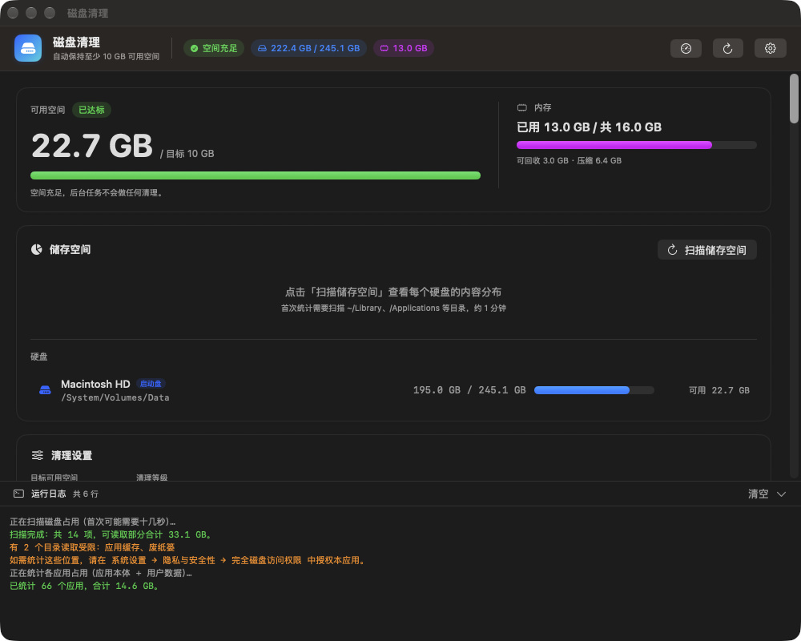
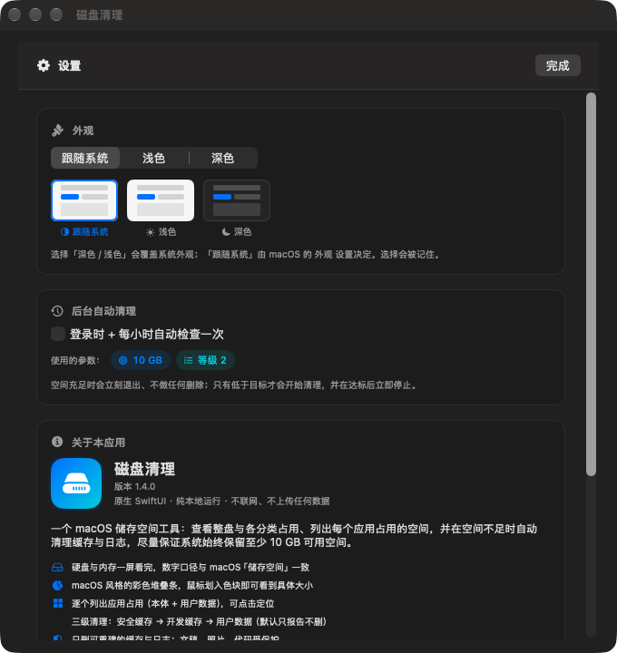

A native macOS storage cleaner with a GUI. See exactly where your disk space went, check what every app is using, and let it quietly clean rebuildable caches and logs — stopping the moment your target is met.
原生 macOS 储存空间清理工具，带图形界面。看清空间到底去哪了、每个应用占用了多少， 然后让它在后台安静地清理可重建的缓存与日志 —— 达到目标就立刻停止。
Not sure which you have? Run uname -m — arm64 is Apple Silicon, x86_64 is Intel.
不确定是哪种？终端执行 uname -m —— arm64 是 Apple 芯片，x86_64 是 Intel。
Everything in one window — and a per-app data manager when you want to dig in.
所有信息都在一个窗口里，想深挖时还有按应用的数据管理器。


Built to run unattended, so deletion is deliberately boring.
为无人值守而设计，所以删除逻辑刻意做得"无聊"。
Checks hourly and cleans only when free space drops below your target (10 GB by default) — then stops the instant it is met.
每小时检查一次，只有低于目标（默认 10 GB）才清理，达到目标立刻停止，绝不"过度清理"。
A colour stacked bar for Applications, Documents, Photos, Developer caches, System data… Hover a segment for the exact size.
彩色堆叠条展示应用程序、文稿、照片、开发者缓存、系统数据等分类；鼠标划入色块看精确大小。
Every app's bundle size plus its user data under ~/Library, sorted by size.
每个 App 的本体大小，加上它在 ~/Library 下的用户数据，按大小排序。
Pick exactly what to delete. Caches and logs are preselected; chat records, databases and login state stay locked until you explicitly unlock them.
自己挑要删什么。缓存和日志默认勾选；聊天记录、数据库、登录状态**默认锁住**，必须手动解锁并二次确认。
Free space next to the icon, a warning triangle when you drop below target, and a popover with disk, memory and quick actions.
图标旁显示可用空间，低于目标变 ⚠️，点击弹出磁盘、内存面板与快捷操作。
No telemetry, nothing uploaded. The only network request is the optional update check — turn it off and the app never opens a socket.
没有遥测、不上传任何数据。唯一的联网行为是可关闭的更新检查 —— 关掉后应用完全不碰网络。
Three tiers, from safest to most aggressive. Tier 3 never runs unless you ask for it.
三个等级，从最安全到最激进。第 3 级不主动开启就永远不会执行。
| Tier | 等级 | What it removes | 清理内容 | Default | 默认 |
|---|---|---|---|---|---|
| 1 | Caches & logs, Xcode DerivedData, crash reports, huge log files (truncated, not deleted) | 缓存与日志、Xcode DerivedData、崩溃报告、超大日志（清空而非删除） | ✅ | ||
| 2 | npm / pnpm / pip / Homebrew / Go / Cargo / Gradle and other rebuildable developer caches | npm / pnpm / pip / Homebrew / Go / Cargo / Gradle 等可重建的开发缓存 | ✅ | ||
| 3 | Xcode archives, iOS backups, Trash, old downloads — your personal data | Xcode 归档、iOS 备份、废纸篓、旧下载 —— 你的个人数据 | report only | 只报告 |
~/Documents, ~/Desktop, ~/.ssh, ~/Library/Keychains … are refused outright. Deletion is age-based, filenames are handled NUL-safely, every du has a hard timeout, and the whole run is logged to ~/Library/Logs/diskautoclean.log.
安全：所有清理目标都在白名单里且必须位于你的主目录内；~/Documents、~/Desktop、~/.ssh、~/Library/Keychains 等路径直接拒绝。按时间删除、文件名 NUL 安全处理、每个 du 都有硬超时，全过程记录到 ~/Library/Logs/diskautoclean.log。
uname -m → arm64 (Apple Silicon) or x86_64 (Intel).
执行 uname -m → arm64（Apple 芯片）或 x86_64（Intel）。
DiskCleaner.app into /Applications.
下载上面匹配的 .zip，把 DiskCleaner.app 拖进 /Applications。
xattr -dr com.apple.quarantine /Applications/DiskCleaner.app open /Applications/DiskCleaner.app
Prefer to build it yourself? Only the Command Line Tools are needed.
想自己编译？只需要 Command Line Tools。
git clone https://github.com/wang90/disk-cleaner.git cd disk-cleaner ./build.command # builds DiskCleaner.app and opens it